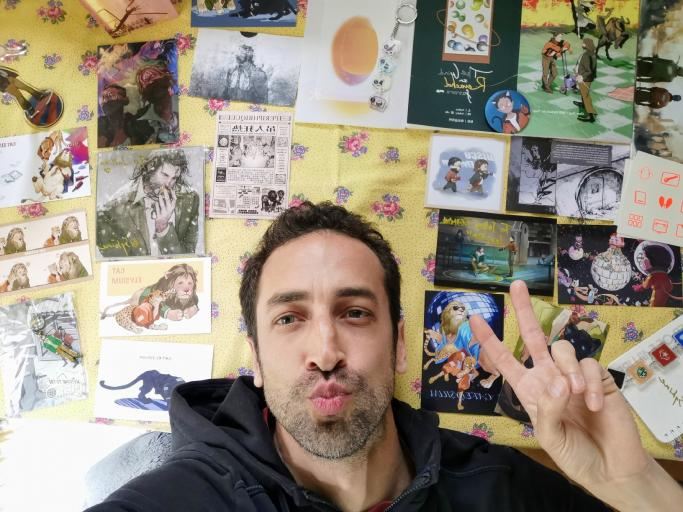
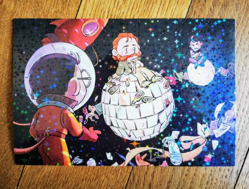
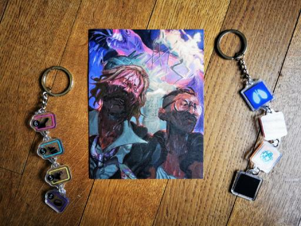
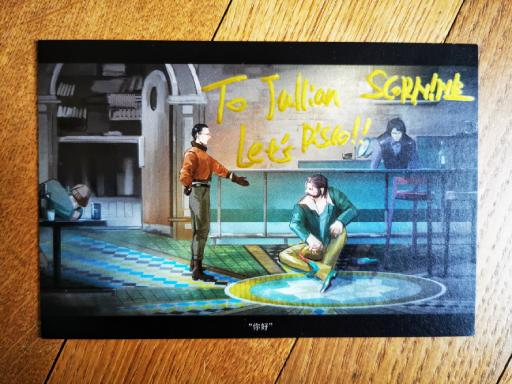
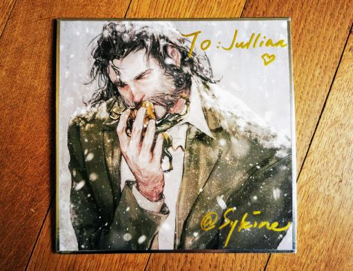

Ton propre script livré par l'acteur voix off de Kim Kitsuragi !
Tu es fan de certaines de mes œuvres, chansons, jeux vidéo et souhaites un enregistrement personnel de ma voix pour ton projet ou simplement pour usage privé ? Ton ami est un grand fan de Disco Elysium et tu aimerais lui offrir une surprise unique ? Tu es au bon endroit.

J'enregistrerai dans ma cabine de prise de son avec mon microphone professionnel, j'éditerai, traiterai et exporterai l'audio en qualité maximale, prêt à être joué su tous tes appareils. Les livraisons seront effectuées aussi rapidement que possible, généralement dans les jours suivant la validation du projet.

L'immense succès de Disco Elysium nous a tous surpris. Je suis extrêmement heureux d'avoir eu l'occasion de travailler sur ce jeu vidéo, donnant ma voix au Lieutenant Kim Kitsuragi. Cela a donné pas mal de visibilité à mon travail. Vos commentaires me touchent énormément, merci beaucoup.
Vous êtes nombreux à me demander si je peux enregistrer du contenu personnalisé, sans objectif commercial. La réponse est oui ! Et tu seras peut-être heureux d'apprendre que la voix de Kim n'est pas très différente de ma voix naturelle.
Que ce soit pour un cadeau d'anniversaire, ton propre plaisir, tout type de projet créatif, pour entendre ton propre poème avec ma voix en anglais, français, espagnol ou chinois... n'hésite pas à me contacter:
Fanart, fandom, fan, talent, artists, Disco Elysium, Kim Kitsuragi, shitposting, voice, actor, acting, VA, VO, deadpan, deep, warm, audio, personalized, private, content, recording
#OMG #OMFG #neverfuckwithkimkitsuragi #thankyou!



